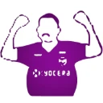

観戦をちょっと楽しくする道具を、サンガを応援する人みんなに。
京都サンガF.C.の公式サイトではありません
大阪から京都サンガを応援しています／2001年から観戦／主にゴール裏近くのバックスタンド2階／息子小4サッカーチーム所属／彦根出身
@kou_osakacity
京都サンガF.C.の公式サイトではありません。ファンが個人で作っているものです。
掲載内容の正確性について作成者は責任を負いません。日程・会場・対戦カードなどは、必ず公式発表を確認してください。